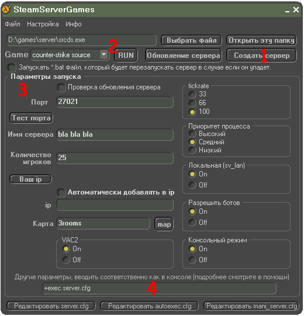

1) У вас ещё нету сервера? это поправимо :)
Идём в "Создать сервер". Выбираем путь нового сервера (ВНИМАНИЕ! В пути нового сервера не должно быть пробелов, в противном случае программа выдаст ошибку) Дождитесь начала загрузки файлов, она может не скоро начаться. Должно открыться черное окно, дождитесь начала загрузки сервера. В той папке которую вы выбрали будет скопирована папка server. В дальнейшем там будет ваш сервер.
Дальше смотрим мануал по настройке сервера..
2) Запуск сервера
Тут ничего сложного нету, выбираем путь к файлу srcds.exe(для cs 1.6 hlds.exe) который лежит в вашей папке сервера, выбираем игру и смело жмём "Start" НО! сначала надо указать параметры запуска и насроить его!
3) Параметры запуска
Как вы видите, тут есть поля ввода и просто на выбор. В полях ввода пишите без всяких дополнительных символов, ip адресс указывать необязятельно если у вас одна сеть. (темболее если сервер не запускается, ругаясь на порт "could't allocate dedicated server UPD port")
(4 дополнительное поле) В это поле вводятся команды в соответствии с видом команд для srcds.exe, если вы не опытный пользователь,то лучше эту строку не трогать, а оставить так как есть. Ниже приведены некоторые дополнительные команды и их описание.
Команды SrcDS:
+hostport <порт>
Задает порт хоста.
+clientport <порт>
Задает порт клиента.
+tv_port - указывает UDP порт, на котором запускается SourceTV. По умолчанию используется порт 27020, если он занят, автоматически используется следующий
-dev
Показывать сообщение разработчика.
-debug
Режим разработки.
-verify_all
Производит проверку на то, что каждый файл сервера последней версии.
----------Обновление Сервера---------
Жмём на кнопку обновления, при создании сервера в папке срвера был создан файл HldsUpdateTool.exe, нам нужно выбрать его и выбрать игру на главной панеле, теперь и дождитесь начала проверки файлов.
Инструменты.
Создание client.txt - файл в котором прописаны админы mani admin plugin'а
Программы других авторов.
Создание maplist.txt - сканирует папку с картами и выдаёт вам список
Создание server.cfg - создание файла-конфига сервера
----------------------------------------------------------------------------
Чтобы унать больше посетите этот раздел форума.
----------------------------------------------------------------------------